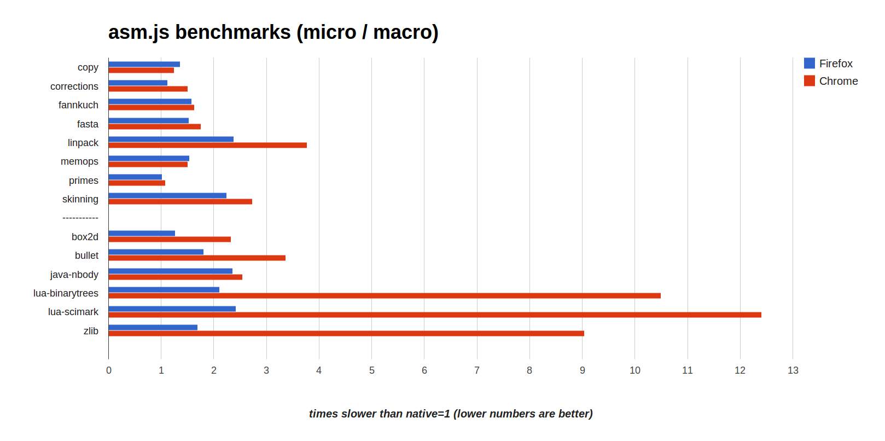
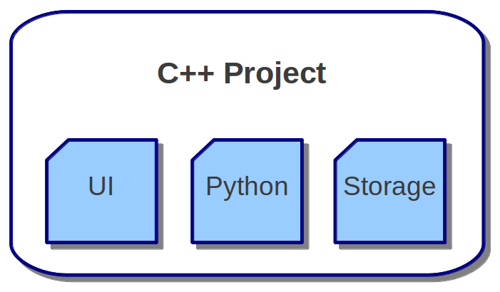
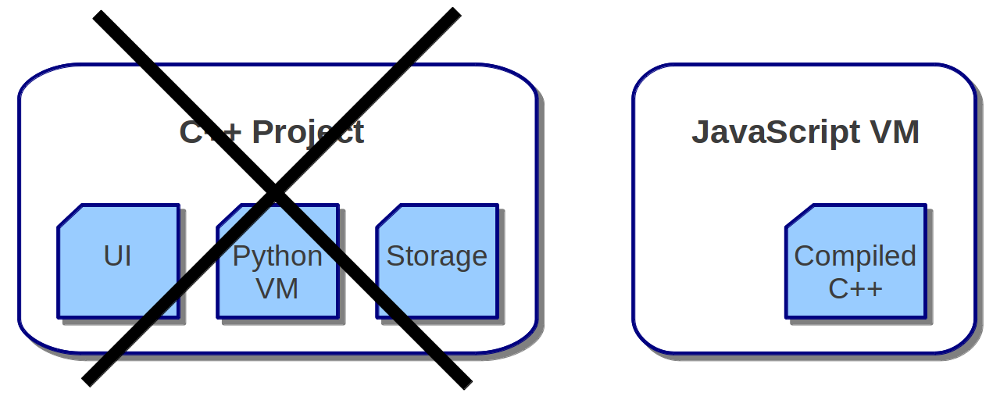

JavaScript + Other
Languages
Alon Zakai (Mozilla)
QCon
Other Languages?
Why? ;)
JavaScript is great
Runs in all browsers
Familiar syntax
Dynamic typing
Other languages are
great too
Existing code
Developer tools
Static typing
Mixing Languages:
examples
Spreadsheets: C/C++ and VBA, etc
Web browsers: C/C++ and JavaScript
Game engines: C/C++ and Lua, etc.
Libraries for scripting languages: Python and C/C++ modules like NumPy, etc.
Mixing Languages
When useful, gives you the best parts of multiple languages
The Web
JavaScript is the only standards-based language in web browsers
If we want to run other languages on the web, we need to go through JavaScript

Going through JavaScript
Might seem like an odd solution
But replacing JavaScript with anything else would slow down the web
Adding another virtual machine (VM) alongside JavaScript is complicated (cross-VM GC, etc.)
Consensus to standardize any such change would be very hard
Going through JavaScript
But it turns out to be not so odd!
Running other languages in JavaScript requires no standardization
Turns out performance can be good in many cases
No new VM means no new attack surface for exploits
1. Compile Code to JS
- C/C++: Emscripten, Mandreel
- Java: Google Web Toolkit (GWT)
- C#: JSIL, Script#
- Python: pyjs
- Lua: lua.js
- CoffeeScript
- Jeremy Ashkenas's list has many dozens
Compiling to JavaScript:
Nothing New!
- 2006: GWT (Java)
- 2007: pyjamas (Python)
Adoption
Java (GWT) used in Blogger, enterprise apps
C# (Script#) used in Microsoft Office Web Apps
Compilation Example
volatile float array[5000]; // C++
int main() {
for (int i = 0; i < 5000; ++i) {
array[i] += 1.0f;
}
}=>
var g = Float32Array(32768);
function main() { // JavaScript
var a = 0, b = 0;
do {
a = 8 + (b << 2) | 0;
g[a >> 2] = +g[a >> 2] + 1.0;
b = b + 1 | 0;
} while ((b | 0) < 5000);
}This is a subset of JS called asm.js
asm.js
An optimizable subset of JavaScript, intended primary as a compiler target
Avoids potential slowdowns (types changing, GC pauses)
Low-level and easy to optimize
asm.js
That asm.js example from before:
var g = Float32Array(32768);
function main() { // JavaScript
var a = 0, b = 0;
do {
a = 8 + (b << 2) | 0;
g[a >> 2] = +g[a >> 2] + 1.0;
b = b + 1 | 0;
} while ((b | 0) < 5000);
}Integers remain integers
"Memory" is a fast typed array
asm.js
Every compiler - GWT, CoffeeScript, etc. - generates a particular subset of JavaScript
Emscripten and Mandreel converged on a useful subset for C/C++
Added to a popular benchmark, Google Octane
asm.js formalizes that subset
Performance
{kind=link}
(VMs and Emscripten from June 10th 2013, run on a 64-bit linux machine)
Performance
C/C++ compiled to JavaScript can run close to native speed
Beats Java in some cases
No need to standardize (just like other compilers: GWT, CoffeeScript, etc.), improves at the speed that JS engines improve: FAST
Already fast enough even for demanding use cases like 3D games
1. Compile Code to JS
..
2. Compile a VM to JS
Use a C/C++ to JavaScript compiler on the C/C++ VM of a language
Avoid writing a new VM or compiler
1. Compile Code to JS
..
2. Compile a VM to JS
..
The plot so far
We can run many languages on the web
By running them in JavaScript
Second half:
Connecting them all
What do other platforms/environments do?
Embedding in C/C++
Main project is written in C/C++
VM for a scripting language (e.g., Python) is also written in C/C++
VM has a C/C++ API to bridge the two "worlds"
Embedding Python in C
Python makes it easy to run code in its VM:
// C code
PyRun_SimpleString("print 'hello from python!'");Other APIs let you create Python objects and operate on them from C
Embedding in C/C++
Script language is just another module in the C/C++ project
(it happens to be a VM)
Python ==> C
// C++ with Boost.Python
#include "boost/python.hpp"
char const* greet() {
return "hello from C!";
}
BOOST_PYTHON_MODULE(greeter) {
boost::python::def("greet", greet);
}
# Python
>>> import greeter
>>> greeter.greet()
hello from C!
Python ==> C++
Boost.Python can also wrap C++ classes
// C++ class
class Cat {
string name;
public:
Cat(string name_) : name(name_) {}
void meow() { printf("%s meows\n", name.c_str());
};
BOOST_PYTHON_MODULE(Cats) {
class <Cat>("Cat").def("meow", &Cat::meow);
}
// Python
>>>> import Cats
>>>> my_cat = Cats.Cat('Fluffy')
>>>> print my_cat.meow()
Fluffy meows
That's cool I guess
But can we do this in JavaScript?
YES!
C ==> JavaScript
Emscripten provides APIs on the C side
#include "emscripten.h"
int main() {
// Call JS from C
emscripten_run_script("alert('hello from C!')");
return 0;
}
Similar to how we called Python from C...
But totally different!
Difference doesn't matter though,
API is the same ;)
C ==> JavaScript (v2)
Implement a C API in JS:
// myLib.js
mergeInto(LibraryManager.library, {
js_func: function(x) { alert('you sent ' + x) }
});
// main.c (emcc main.c --js-library myLib.js)
void js_func(int x);
int main() {
js_func(3); // will cause alert('you sent 3')
return 0;
}
JavaScript ==> C
Very efficient:
// output.js
function _js_func(x) { // from JavaScript library
alert('you sent ' + x);
}
function _main() { // compiled from C
_js_func(3);
return 0;
}
This is how emscripten implements C APIs (like SDL) using HTML5 APIs
JavaScript ==> C
Emscripten provides APIs on the JS side too
// C file that was compiled to JS
int c_add(int x, int y) { return x+y; }
// Call C from JS
var result = ccall('c_add', // name
'number', // return type
['number', 'number'], // argument types
[10, 20]); // arguments
// returns 30
JavaScript ==> C
cwrap is useful for multiple calls
// Call C from JS
var c_add = cwrap('c_add', // name
'number', // return type
['number', 'number']); // argument types
console.log(c_add(10, 20)); // 30
console.log(c_add(20, 30)); // 50
Wrapper behaves just like a normal JS function
C++ ==> JS
Embind, written by IMVU, glues together C++ and JavaScript
// Access JS objects in C++ like C++ objects
#include "emscripten/val.h"
using namespace emscripten;
int main() {
val Math = val::global("Math");
return Math.call("abs", -10); // returns 10
}
JS ==> C++
Embind can also go the other way
// C++ library
#include "emscripten/bind.h"
using namespace emscripten;
int c_add(int a, int b) { return a+b; }
EMSCRIPTEN_BINDINGS(my_module) {
function("c_add", &c_add);
}
// Use it in JS
alert(Module.c_add(10, 20)); // shows 30
JS ==> C++
Classes as well:
// C++ class wrapped by Embind
class Cat {
string name;
public:
Cat(string name_) : name(name_) {}
void meow() { printf("%s meows\n", name.c_str());
};
EMSCRIPTEN_BINDINGS(Cats) { // much like Boost.Python...
class_<Cat>("Cat").constructor()
.function("meow", &Cat::meow);
}
// JavaScript
var myCat = new Module.Cat("Fluffy");
alert(myCat.meow()); // shows "Fluffy meows"
Challenges
No way to know when a JS object is garbage-collected, must call myCat.delete() to clean it up
Weak refs in JavaScript might help fix that
But overall, surprisingly easy despite big differences in languages
Final Examples
Not just C++
We can also connect JavaScript and dynamic languages running in JavaScript
In some ways this can be easier
Lua scripting
on the web
The time in milliseconds, reported by Lua:
.
View source, search for text/lua if you don't believe ;)
Summary
We can use languages other than JavaScript on the web, by running them in JavaScript
Those languages can interact with JavaScript, allowing mixed-language projects
Thanks for listening!